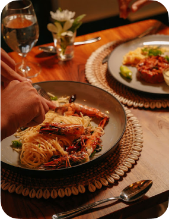
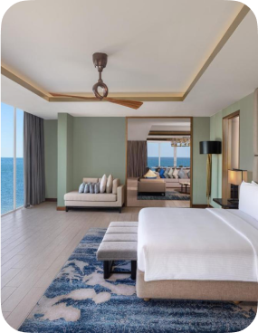
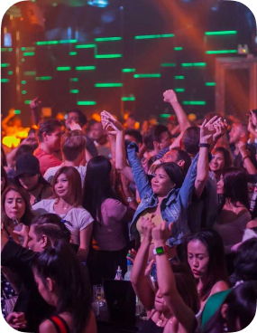
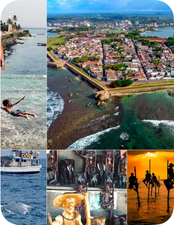
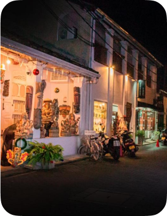
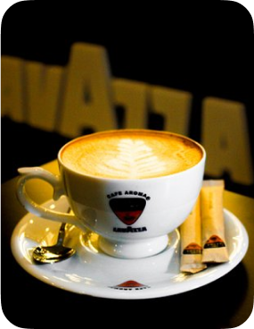

Galle is a charming coastal city located on the southwestern tip of Sri Lanka. Known for its rich history and cultural heritage, Galle is famous for the Galle Fort, a UNESCO World Heritage site built by the Portuguese in the 16th century and later fortified by the Dutch. The city is a blend of old-world charm and modern vibrancy, offering visitors a unique experience with its well-preserved colonial architecture, narrow streets lined with quaint cafes, boutiques, and art galleries. Galle's picturesque beaches, like Unawatuna and Jungle Beach, attract tourists looking to enjoy the sun, sand, and sea. The city is also a hub for artists and writers, contributing to its vibrant cultural scene. Whether you're interested in history, culture, or simply relaxing by the beach, Galle offers something for everyone, making it a must-visit destination in Sri Lanka.

Natural Attractions

Where to Eat

Accommodations

Where to Party

Spa Treatments

Things to Do

Night Life

Coffee Times